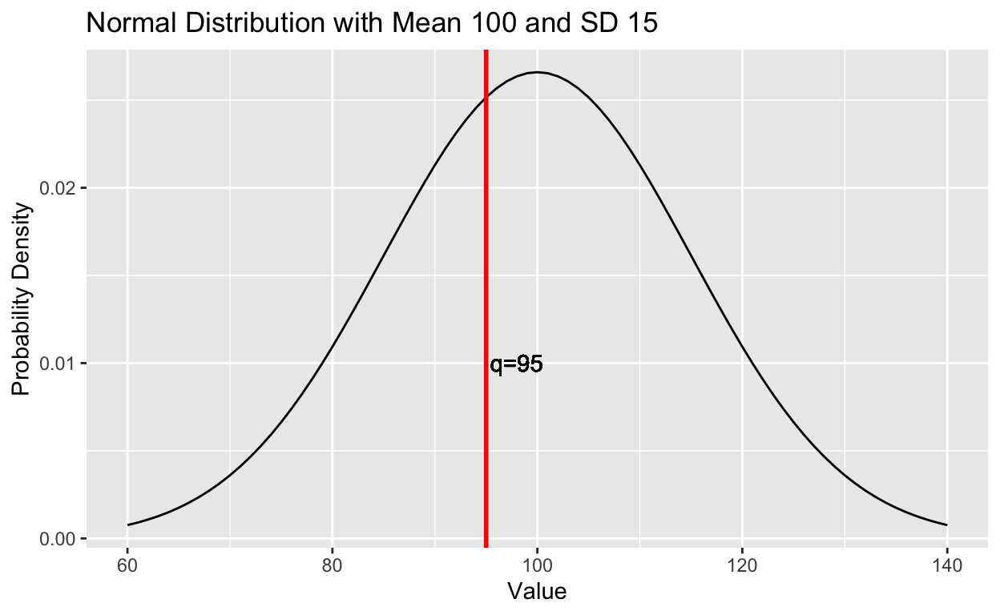

Introduction
In this tutorial, you will learn about how to use R’s built in functions for working with distributions. We will specifically be working with the Normal distribution, the binomial distribution, the Poisson distribution, and the uniform distribution.
Random sampling
One crucial component of performing simulations is randomly sampling data from a known distribution. There is a family of functions in R that can perform this task. Today we will discuss rnorm(), rbinom(), rpois(), and runif().
All these functions operate in a similar way. They require the user to specify:
- The sample size to be drawn from the distribution.
- The parameters of the distribution from which the sample is to be drawn. Sometimes R has default values for these parameters, and other times the function will not run unless the R user specifies their values.
rnorm()
Let’s demonstrate the use of one of these functions, rnorm(). rnorm() randomly draws values from the normal distribution.
rnorm() has three arguments: n, mean, and sd. n is the sample size, while mean and sd are the distribution parameters to be specified (i.e., \(\mu\) & \(\sigma\)). By default, rnorm() assumes a mean of 0 and a sd of 1.
# randomly draw 10 values from the normal with mean 0 and sd 1
rnorm(n=10)## [1] 0.26482888 -0.14320153 0.94612066 0.10885594 -0.57972851 -0.62242425
## [7] -0.09753893 -1.21245816 0.63962697 0.19580580rnorm() returns a vector of n values randomly drawn from the normal distribution. Above we did not specify the mean or standard deviation, so rnorm() used its default values of 0 and 1 (respectively). 0 and 1 are the default values because they are the mean and standard deviation of the Standard Normal Distribution.
Let’s say we want to draw 1000 values from a normal distribution with a mean of 100 and a standard deviation of 15, and plot these values as a histogram. We can easily do so using rnorm().
# randomly drawing values and saving them in a tibble for easy plotting with ggplot
norm_sim <- tibble(
value=rnorm(n=1000,mean=100,sd=15)
)
# ggplot
ggplot(data=norm_sim,aes(x=value))+
geom_histogram(binwidth = 5,col='black',fill='gray')This function is incredibly useful for simulating data, which will become even more important as you learn more about statistics and modeling. Let’s learn about the other random simulation functions.
rbinom()
rbinom() allows simulation from the binomial distribution. The binomial distribution is a discrete probability distribution, used to model the probability of k successes for a binary event with n trials, where the event has a probability of success of p on a single trial.
For example, a fair coin has a p of .5 of landing on heads on a single flip. If heads is defined as a success (1), and tails is defined as a failure (0), we can use rbinom() to simulate flipping a coin n times. If we tell rbinom() that n=1, size=100, and prob=.5, this is equivalent to the following:
- Return 1 sample of 100 coin flips (or trials), where there is a .5 probability of heads on a single flip.
flips <- rbinom(n=1,size=100,prob=.5)
flips## [1] 47This tells us that when we “flipped” our coin 100 times, we got a sample containing 47 heads (assuming we define 1 as heads and 0 as tails). More generally speaking, our sample contains 47 successes out of 100 (meaning there were 53 failures).
Say we want to do our coin flipping sequence (100 times), 5 separate times. We can use rbinom() but simply change the n argument to 5.
flips_5 <- rbinom(n=5,size=100,prob=.5)
flips_5## [1] 50 54 46 54 46Now, we have 5 samples, each containing various numbers of successes out of 100.
We don’t always have to sample with a .5 probability of success. We can change the prob argument to a different value, indicating a different probability of success on a given trial. After all, not every binary event can be assumed to occur with a 50/50 chance.
flips_new_prob <- rbinom(n=5, size=100,prob=.2)
flips_new_prob## [1] 25 20 15 20 16This new simulation was done assuming only a .2 probability of success, which is reflected in the random samples. Now the numbers of success center around 20, whereas above they centered around 100.
rpois()
Related to the binomial distribution is the Poisson distribution. The Poisson distribution is also a discrete probability distribution, used to model the probability of a particular number events occurring in a given time interval.
For example, say that on average, it rains twice a week in Amherst during the summer (this is not accurate!). We can use the Poisson distribution to model the probability that it rains any particular number of times per week, given that the average frequency is 2. This average frequency is known as \(\lambda\) (lambda), the Poisson distribution’s only parameter. Below is a figure demonstrating the Poisson distribution in this scenario:

As you can see, given that the average frequency of rain is twice per week, it’s fairly likely that it rains anywhere from 0-4 times per week. However, once you go past 4, the probability of 5, 6, 7, etc…rains per week becomes increasingly tiny.
The Poisson distribution is bound by 0 (because we cannot have a negative number of events) and infinity.
Now that we know a bit about the Poisson distribution, we can use the rpois() function to randomly generate data from it.
The rpois() function requires two arguments: n and lambda. n refers to the number of random values to generate, and lambda is the average number of occurrences per time period.
When we run this function, we get random data, with each value corresponding to the number of event occurrences in the time period.
random_pois <- rpois(n = 10,lambda = 2)
random_pois## [1] 1 2 0 2 2 3 1 1 0 1As with rnorm() and rbinom(), rpois() returns data in the form of a vector.
runif()
The uniform distribution is a distribution where all values in a given range are equally likely. For example, if we refer a uniform distribution from 0 to 1, this means that all values from 0 to 1 are equally likely. Note that in this case, we are talking about a continuous uniform distribution, in which there are infinitely many values between 0 and 1 (or whatever the min and max of our range are). There exists a discrete uniform distribution, but this is beyond the scope of the present discussion.
runif() requires the argument n, the number of values to sample, as well as the distribution parameters min and max. By default, runif() has a min of 0 and a max of 1.
Running runif(n=10) returns a vector containing 10 values randomly sampled from a uniform distribution from 0 to 1.
# randomly sample 10 values from a uniform distribution from 0 to 1
runif(n=10)## [1] 0.74170060 0.43868434 0.51301687 0.23937264 0.47884968 0.34151149
## [7] 0.49026261 0.81423904 0.03839757 0.63320528If we specify the min and max, we can change the parameters of the distribution.
# randomly sample 10 values from a uniform distribution from 10 to 100
runif(n=10,min=10,max=100)## [1] 61.15694 20.33765 10.64762 67.28167 23.23821 12.75498 73.40792 13.53611
## [9] 84.62122 63.82492runif() is great for randomly generating numbers when programming. rnorm() can be useful, but by definition certain values are more likely than others. On the other hand, runif() ensures that all values are equally likely (within a range).
Summary - Random Sampling Functions
You’ve now learned about how to use random sampling functions in R to sample from a normal, binomial, Poisson, and uniform distribution. Here’s a quick key to the functions:
rnorm()- sample from a normal distribution- Arguments:
n(number of values in the sample)mean(\(\mu\), mean of the distribution, default value is 0)sd(\(\sigma\), standard deviation of the distribution, default value is 1)
- Arguments:
rbinom()- sample from a binomial distribution- Arguments:
n(number of samples to draw)size(number of trials in each sample, no default value)prob(probability of success on a given trial, no default value)
- Arguments:
rpois()- sample from a Poisson distribution- Arguments:
n(number of values in the sample)lambda(\(\lambda\), average number of occurences in a given time period, no default value)
- Arguments:
runif()- sample from a continuous uniform distribution- Arguments:
n(number of values in the sample)min(lower limit of the distribution, default value is 0)max(upper limit of the distribution, default value is 1).
- Arguments:
Probability Mass/Probability Density
Yet another family of functions, this time starting with a “d” instead of an “r”, can be used to compute probability mass (in the case of a discrete probability distribution) or probability density (in the case of a continuous probability distribution). Let’s begin with probability mass.
Probability Mass
We can compute probability mass, which essentially tells us, given a distribution, the probability that a random variable is equal to exactly a certain value. Let’s start out by discussing the binomial distribution.
Binomial distribution - dbinom()
Using the function dbinom(), we can compute the probability of a specific number of successes (x), given the number of trials (size) and probability of success on a single trial (prob).
Let’s say we’re flipping a fair coin (i.e., 50% chance of heads and 50% chance of tails). We may want to know the probability that we flip the coin 10 times and get exactly 4 heads.
dbinom(x=4,size=5,prob=.5)## [1] 0.15625There is a 0.15625 probability that we flip a fair coin 10 times and get exactly 4 heads.
dbinom() is very useful for finding out the probability of a specific outcome in a sequence of binomial trials. Now let’s move onto the Poisson distribution and dpois().
Probability mass is very useful. We can use dbinom() to plot the probability of all possible outcomes in a series of binomial trials:
data_1 <- tibble(
x = seq(0,10),
probs = dbinom(x, 10, .5)
)
ggplot(data_1, aes(x,probs))+
geom_point()+
geom_line()+
scale_x_continuous(breaks = seq(0,10,2))+
labs(x="Number of Heads Flipped",y="Probability",title="Modeling Coin Flip Probability with the Binomial Distribution")Poisson distribution - dpois()
Using dpois(), we can compute the probability of a specific number of occurrences of an event during an interval, given \(\lambda\), the average number of occurrences per interval.
Recall our hypothetical example earlier, where we suggested that on average, it rains 2x per week in Amherst. Given this parameter, we can compute the probability that it rains exactly 3 times in a week. We will use the dpois() function, specifying that x=3 and lambda=2.
dpois(x=3,lambda=2)## [1] 0.180447We see that there is a 0.180447 probability of it raining 3 times per week in Amherst, given that on average it rains 2x per week.
Like with dbinom(), we can use dpois() to plot the probability of given outcomes. Though the Poisson distribution is bound only by 0 and infinity, we can plot to a reasonable number of occurrences (at a certain point, values have a probability near 0).
data_2 <- tibble(
freqs = 0:10,
probs = dpois(0:10, 2)
)
ggplot(data_2, aes(freqs,probs))+
geom_point()+
geom_line()+
scale_x_continuous(breaks = seq(0,10,2))+
scale_y_continuous(limits = c(0,.5),breaks = seq(0,.5,.1))+
labs(title="Modeling Rain Frequency Probability with the Poisson Distribution",
subtitle = expression(paste(lambda,"= 2")),
x="Rain Frequency per Week",y="Probability")Probability Density
When dealing with continuous distributions, the probability of sampling any specific value is so low as to be near 0. For example, given a normal distribution with mean 10 and sd 2, we could sample 10.1, 10.001, 10.001, and so on…The possibilities are literally infinite!
So with continuous distributions, we compute something related: probability density. Probability density is still the height of the curve, but it is no longer probability - it is density. However, we can still use it to infer which values are more likely. That is, values with a higher density are still more likely to be sampled. Let’s start off by discussing the normal distribution and dnorm().
Normal distribution - dnorm()
Using dnorm(), we can compute probability density for a particular value x, given a normal distribution with a given mean and sd.
Say we have a normal distribution with mean 100 and sd 15. We can compute the probability density for a particular value x as follows:
dnorm(x=105,mean=100,sd=15)## [1] 0.02515888As you can see, the probability density for 105 is very small, despite it being close to the mean.
dnorm() can also be used for plotting the normal distribution. While it’s computationally impossible to compute the density for all possible values, we can simply compute the density for a sequence of integers within a reasonable range for the distribution, and use geom_line() to draw a line between these points.
data_3 <- tibble(
x=seq(60,140),
y=dnorm(seq(60,140),mean=100,sd=15)
)
ggplot(data_3, aes(x,y))+
geom_line()+
labs(x="Value",y="Probability Density",title="Normal Distribution with Mean 100 and SD 15")As you can see we end up with a smooth normal distribution.
While the probability density for any individual point is low, we can still interpret these values relative to one another. By this we mean that points higher on the curve are still more likely than those lower on the curve. For example, it’s more likely to a sample a point within 1 SD of the mean than outside 1 SD of the mean. This is reflected in the height of the curve.
Uniform distribution - dunif()
We can also compute the density for a point on the uniform distribution using dunif(). dunif() requires the point x, as well as the min and max values of the distribution.
dunif(x=5,min=1,max=10)## [1] 0.1111111Summary - Probability Mass/Probability Density Functions
You’ve now learned about how to use probability density and probability mass functions in R. Here’s a quick key to the functions:
dbinom()- probability mass of point on binomial distribution- Arguments:
x(number of successes)size(number of trials, no default value)prob(probability of success on a given trial, no default value)
- Arguments:
dpois()- probability mass of point on Poisson distribution- Arguments:
x(number of occurences)lambda(\(\lambda\), average number of occurences in a given time period, no default value)
- Arguments:
dnorm()- density of point on normal distribution- Arguments:
x(value to get density of)mean(\(\mu\), mean of the distribution, default value is 0)sd(\(\sigma\), standard deviation of the distribution, default value is 1)
- Arguments:
dunif()- density of point on continuous uniform distribution- Arguments:
x(value to get density of)min(lower limit of the distribution, default value is 0)max(upper limit of the distribution, default value is 1).
- Arguments:
Cumulative probability
Cumulative probability allows to get the probability of a range of values. In R, these functions begin with a “p” (i.e., pnorm(), pbinom(), ppois(), and punif()). Let’s start off by discussing pnorm().
pnorm()
Using pnorm(), we can get the probability of sampling a value less than or equal to a given value, as well as greater than or equal to a given value.

Here, we have a normal distribution with mean 100 and sd 15. We also plotted a red line at 95 on the x axis. Imagine we want to find the probability of sampling a value of 95 or less (anything to the left of the red line). We can do so using pnorm(), specifying the point with q, as well as the mean and sd of the distribution.
pnorm(q=95, mean=100, sd=15)## [1] 0.3694413There is a 0.3694413 probability of sampling a value of 95 or less from a normal distribution with mean 100 and sd 15.
What about if we want to find the probability of sampling a value to the right of 95? We can simply include the argument lower.tail=F (lower.tail=T by default, indicating that it always assumes the user is asking for the left side of the curve unless otherwise specified).
pnorm(q=95, mean=100, sd=15,lower.tail = F)## [1] 0.6305587There is a 0.6305587 probability of sampling a value of 95 or greater from a normal distribution with mean 100 and sd 15.
One final point about pnorm(). What do you think happens when we add these two probabilities together?
pnorm(q=95, mean=100, sd=15)+pnorm(q=95, mean=100, sd=15,lower.tail = F)## [1] 1We get a probability of 1! This is because there is a 100% chance of sampling a value less or equal to 95 OR greater than or equal to 95. In other words, there is a 100% chance of sampling a value between \(-\infty\) and \(\infty\).
pbinom()
We can perform a similar operation on the binomial distribution using pbinom(). We simply need to specify the point q as well as the number of trials (size) and probability of success on a single trial (prob).
For example, say you want to know the probability of flipping 4 or less heads out of 10 flips, using a fair coin. You can find this probability using pbinom():
pbinom(q=4,size=10,prob=.5)## [1] 0.3769531pbinom() also has lower.tail=T by default. So to find the probability of 4 or greater heads, we can include lower.tail=F.
pbinom(q=4,size=10,prob=.5,lower.tail = F)## [1] 0.6230469Again, when we add these two probabilities together, we should expect to get a value of 1.
pbinom(q=4,size=10,prob=.5)+pbinom(q=4,size=10,prob=.5,lower.tail = F)## [1] 1We also get a value of 1 if we set q equal to the number of trials.
pbinom(q=10,size=10,prob=.5)## [1] 1This makes sense because there’s a 100% chance of flipping a coin 10 times and getting 10 or fewer heads. In other words, this exhausts all possibilities.
ppois()
We can use ppois() to calculate cumulative probability for a Poisson distribution.
Again going back to our rain example, say we want to know the probability of it raining 1 or fewer times in a week, given that on average it rains 2x per week. We can simply run ppois() with q=1 and lambda=2.
ppois(q=1,lambda=2)## [1] 0.4060058Just as with dnorm() and dbinom(), to find the probability of 1 or more occurrences, we simply set lower.tail=F.
ppois(q=1,lambda=2,lower.tail=F)## [1] 0.5939942Again, these two probabilities sum to 1.
ppois(q=1,lambda=2)+ppois(q=1,lambda=2,lower.tail=F)## [1] 1It’s also important to note than when setting lower.tail=F with ppois(), we calculate the probability from q to \(\infty\), as the Poisson distribution is bound by 0 on the left and \(\infty\) on the right.
punif()
Lastly, we can use punif() to calculate cumulative probability with the uniform distribution.
punif(q=10,min=0,max=30)## [1] 0.3333333Above, we calculate the cumulative probability from 10 to the lower limit (0).
We can also calculate the cumulative probability from 10 to the upper limit (30).
punif(q=10,min=0,max=30,lower.tail=F)## [1] 0.6666667And again, these two probabilities will sum to 1.
punif(q=10,min=0,max=30)+punif(q=10,min=0,max=30,lower.tail=F)## [1] 1Summary - Cumulative Probability Functions
You’ve now learned about how to use probability density and probability mass functions in R. Here’s a quick key to the functions:
pnorm()- cumulative probability of normal distribution- Arguments:
q(point to get cumulative probability of)mean(\(\mu\), mean of the distribution, default value is 0)sd(\(\sigma\), standard deviation of the distribution, default value is 1)
- Arguments:
pbinom()- cumulative probability of binomial distribution- Arguments:
q(point to get cumulative probability of)size(number of trials, no default value)prob(probability of success on a given trial, no default value)
- Arguments:
ppois()- cumulative probability of point on Poisson distribution- Arguments:
q(point to get cumulative probability of)lambda(\(\lambda\), average number of occurrences in a given time period, no default value)
- Arguments:
punif()- cumulative probability of point on continuous uniform distribution- Arguments:
q(point to get cumulative probability of)min(lower limit of the distribution, default value is 0)max(upper limit of the distribution, default value is 1).
- Arguments:
Quantile functions
The last family of functions to discuss is the quantile functions. These functions begin with a “q”, and we use them when we want to find the specific value on a distribution associated with a particular cumulative probability.
qnorm()
Say we want to find the point on the standard normal distribution where 5% of the distribution is to the left (for example, finding the cutoff value for a z-test). You can do so easily using qnorm(), simply specifying p=.05.
qnorm(p=.05)## [1] -1.644854You can also specify the mean and sd of the distribution.
qnorm(p=.05,mean=100,sd=15)## [1] 75.3272We see that 5% of the normal distribution (with mean 100 and sd 15) is to the left of 75.3271956.
We can also change the side of the distribution we look at by changing the argument lower.tail to FALSE.
qnorm(p=.05,mean=100,sd=15,lower.tail=FALSE)## [1] 124.6728This gives us the point where 5% of the distribution is to the RIGHT.
qbinom()
qbinom() works similarly. We simply input a cumulative probability value with the p argument and specify the parameters to the distribution (size and prob).
qbinom(p=.05,size=10,prob=.5)## [1] 2This tells us that 5% of the binomial distribution (with 10 trials and probability of .5 on a single trial) is to the left of 2.
qpois()
Again, with qpois(), we input a cumulative probability value and in return get a point on the distribution. We also specify the Poisson distribution parameter lambda.
qpois(p=.5,lambda=2)## [1] 2This tells us that 50% of the Poisson distribution (with lambda equal to 2) is to the left of 0.
qunif()
With qunif(), we input a cumulative probability value and in return get a point on the distribution. We also specify the min and max of the distribution.
qunif(p=.05, min=10,max=40)## [1] 11.5Summary - Quantile Functions
You’ve now learned about how to use probability density and probability mass functions in R. Here’s a quick key to the functions:
qnorm()- quantile on normal distribution- Arguments:
p(cumulative probability to get quantile for)mean(\(\mu\), mean of the distribution, default value is 0)sd(\(\sigma\), standard deviation of the distribution, default value is 1)
- Arguments:
qbinom()- quantile on binomial distribution- Arguments:
p(cumulative probability to get quantile for)size(number of trials, no default value)prob(probability of success on a given trial, no default value)
- Arguments:
qpois()- quantile on Poisson distribution- Arguments:
p(cumulative probability to get quantile for)lambda(\(\lambda\), average number of occurrences in a given time period, no default value)
- Arguments:
qunif()- quantile on continuous uniform distribution- Arguments:
p(cumulative probability to get quantile for)min(lower limit of the distribution, default value is 0)max(upper limit of the distribution, default value is 1).
- Arguments:
Which function should I use?
Many students often have difficulty determining which function to use. Below is a flowchart meant to aid in the decision process: